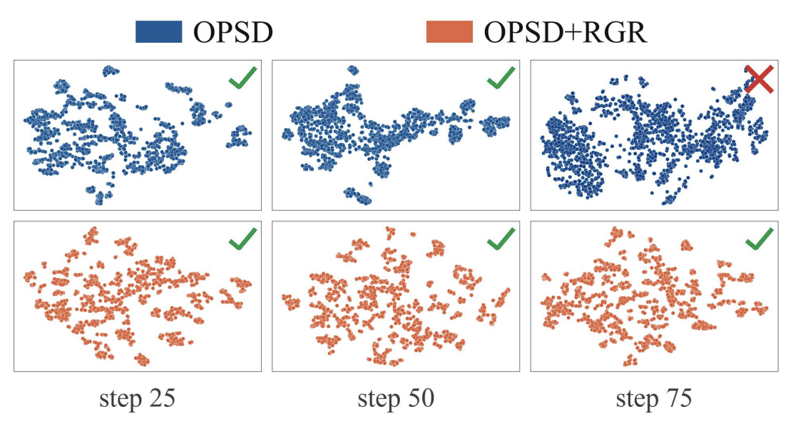

Jiaqi Tian, Ting Long · arXiv 2026
OPSD can be shown to display capability degredation over time. That is, problems that the student model would've normally
gotten right at the beginning of training begin to become more "difficult" as the number of training epochs increase. This is a
failure mode that many people are aware of but its not one whose direct root cause is easily identifiable. The authors perform a
theoreitcal study and identify potential causes: 1). When viewing the hidden representations of the entire sequence at the final layer before logits,
there is clear clustering where intra-cluster compactness and inter-cluster borders are clear, and 2). The entropy between the student and
teacher do not change very much. Motivated by this, the authors introduce Representation Geometry Regularization (basically adding in another loss term).

\begin{gather*}
\mathbb R^{T\times d}\ni H = [\textbf{h}_1,...,\textbf{h}_T], \mathbb R^{T\times d}\ni H_\text{ref} = [\textbf{h}^\text{ref}_1,...,\textbf{h}^\text{ref}_T] \\
\mathcal L_\text{geo} = \|HH^\top-H_\text{ref}H^\top_\text{ref}\|_F^2, \quad \mathcal L_\text{ent} = \|H^\top H - H_\text{ref}^\top H_\text{ref}\|_F^2 \\
\mathcal{L} = \mathcal{L}_\text{OPSD} + \alpha \mathcal{L}_\text{geo} + \beta\mathcal{L}_\text{ent}
\end{gather*}
“RGR effectively reduces correct-to-incorrect transitions while maintaining the self-improvement capability
of OPSD”
Shangjian Yin, Zehao Zhao, Kavosh Asadi, Rui Liu, Yuchen Lu, Shike Mei, Hang Cui, Luke Simon, Zhouxing Shi, Hamed Firooz · arXiv 2026
OPSD removes the external teacher by using a frozen copy of the student that gets to see
the ground-truth solution. The problem this paper finds is that the frozen teacher is a
bad guide on wrong trajectories: even knowing the answer, it puts 94.5% on EOS at the end
of an incorrect response and only 22% on reflection tokens like “Wait.”
Essentially, it would rather stop than tell the student to rethink. The fix (DCE) is to
refresh the teacher from the updated student every round, so it is the same weights with
a different context and a stop-gradient. Heuristically this makes sense, since a teacher
stuck at step 0 can’t teach a revision habit it never picked up. On Qwen3-8B the
average goes from 30.35 (OPSD) to 65.76. SRCL then trains on shorter verified rewrites to
keep the length down, and it collapses without DCE, so it isn’t doing the real
work. What I’m not sold on: the base model with thinking mode on already gets 62.08
at about the same token count, and at 1.7B it beats this method outright (36.88 v.s.
26.88). So is this self-improvement, or is it teaching the non-thinking model to think?
Responses go from 4K to 19K tokens, which looks a lot like the length growth in OPSA. It
also partly answers my question of how far this can iterate. Not that far. Accuracy
peaks around step 100 and the 1.7B run falls apart after that.
\[
\mathcal{L}_G^{(k)} = \mathbb{E}_{(x,g),\; y^{(k)} \sim p_{\theta_k}(\cdot \mid x)}
\left[\frac{1}{m} \sum_{t=1}^{m} \Delta\left(q_{k,t},\, p_{k,t}\right)\right],
\qquad
q_{k,t} = \operatorname{stopgrad}\left[\, p_{\theta_k}\left(\cdot \mid C_t^{\text{prev}}(x, g, \tau, \tilde{y}^{(k)}_{\lt t})\right)\right]
\]
“Frozen teacher favors termination over reflection.”
Yaxuan Li, Yuxin Zuo, Bingxiang He, Jinqian Zhang, Chaojun Xiao, Cheng Qian, Tianyu Yu, Huan-ang Gao, Wenkai Yang, Zhiyuan Liu, Ning Ding · arXiv 2026
The failure mode that got me to read this: a stronger teacher can completely fail to
improve a student while a weaker one succeeds. The paper says two conditions decide
whether OPD works. First, the student and teacher need compatible thinking patterns.
Heuristically this makes sense, since if the teacher thinks differently, a large
proportion of the distillation signal goes to speaking style and not capability. Second,
a higher score doesn’t mean new knowledge. Don’t have to think too hard about
this one. A teacher needs to know something the student hasn’t already seen. The
reverse distillation experiment is my favorite part: distill an RL-trained 1.5B model
toward its own pre-RL checkpoint and it regresses right back, and a 7B teacher from the
same family drags it to the same place. So OPD is ostensibly copying thinking patterns,
not scores. Mechanically, the gains come from the tokens in both models’ top-k
(the overlap ratio goes from 72% to 91% in a successful run), and training on only those
matches full OPD. I’m not sure how to square that with OPSA, which says the
low-logp tokens are the ones that matter. The part that worries me most is the end: the
teacher’s reward gets worse the deeper into the trajectory you go, which is a bad
sign for long-horizon work.
\[
\mathcal{M}_{\text{overlap}} = \mathbb{E}_t\left[\frac{\left|S_t^{(p)} \cap S_t^{(q)}\right|}{k}\right],
\qquad
S_t^{(p)} = \operatorname{TopK}(p_t, k),\quad S_t^{(q)} = \operatorname{TopK}(q_t, k)
\]
“Higher scores ≠ new knowledge.”
Reading across Tsoukalas et al. (arXiv:2605.22763), Feng, Trinh, Bingham et al. (arXiv:2601.22401), Novikov et al. (arXiv:2506.13131), and Tzachristas, Tzachristas & Sui (ACL 2026) · a talk I put together for HINT Lab
This week I stepped back from training tricks and tried to answer a simpler question: when an AI
“solves” an open problem, who actually decides it counts? The honest answer is that it’s
always a verifier, and the kind of verifier you pick determines both what you can reach and how it fails.
The formal-proof-search paper is the clean case: the verifier is the Lean type-checker, so correctness is
exact, and they resolve 9 of 353 open Erdős problems (4 genuinely novel) plus 44 of 492 OEIS
conjectures. What struck me is that the dumbest loop — a basic agent alternating generation with Lean
— replicates the Erdős wins; the fancy evolutionary search only pays off in cost on the two
hardest instances. The verifier is doing the real work, not the search. The failure mode is the
formalization gap: a mis-stated theorem still compiles, and they had to amend “density” to
“lower density” in their own inputs after the agent found proofs.
When the verifier is a person instead (the Gemini Deep Think study on 700 “open” Erdős
problems), the funnel is brutal: 700 attempted → 212 flagged plausible → 27 after non-expert
filtering → 13 meaningfully correct → 4 novel, and even that count was “once as high as 9”
before literature search knocked it down. The expensive step turns out not to be proving anything — it’s
checking whether the result already exists. Half the “solutions” were rediscoveries, including one
sitting in an offhand 1981 remark for 44 years. And when the verifier is just a score (AlphaEvolve), it’s
the cheapest of the three and gives you the 4×4 complex matrix multiplication in 48 scalar products, the
first beat on Strassen in 56 years — but it only reaches problems whose answer is a constructible object
you can benchmark, and benchmarks get gamed under search pressure. The thread I kept pulling on: in all three,
the model will sometimes quietly answer a slightly different question than the one asked, and whether that gets
caught is entirely a property of the verifier, not the model.
“The strongest results are those where verification is cheap relative to generation.”
Yi Ding, Ruqi Zhang · arXiv 2026
In OPD the teacher grades trajectories that are off-policy for it, so this paper asks
whether that supervision is even reliable. It isn’t. For a 4B teacher about 30% of
the answer-token signals point the wrong way, and it gets worse as the teacher gets
bigger. The surprising part is that the student doesn’t care: training on only the
noisy trajectories, only the clean ones, or both all land in about the same place. So,
where do the gains come from? Ostensibly from suppressing the low-logp tokens the student
sampled. Throw away the top 80% of tokens by logp, replace every advantage with a fixed
−0.5, and you still match OPD with no teacher at all. Heuristically this makes
sense to me, since a token the student is already confident in has basically no gradient
left. OPSA then scales the negative advantage with entropy and beats OPD by a lot (48.85
v.s. 32.08 Avg@32 on AIME24 with Qwen3-1.7B). I find this a little unsettling next to
OPDVR, where the sign of the teacher signal clearly mattered. The noise here is only
defined on the boxed answer tokens though, so it may not be the same split. It also
raises the question of how far this can iterate, since it’s only redistributing
mass the student already has.
\[
\mathcal{L}_{\text{OPSA}} = -\mathbb{E}\left[\frac{1}{|S_{\text{lowest20}}|}
\sum_{i \in S_{\text{lowest20}}} A_i^{\text{dyn}} \log \pi_\theta(y_i \mid x;\, y_{\lt i})\right],
\qquad
A_i^{\text{dyn}} = -\frac{1}{2} - \frac{H_i - H_{\min}}{2\,(H_{\max} - H_{\min})}
\]
“…an operation that requires no teacher at all.”
Wenze Lin, Jiale Zhao, Xitai Jiang, Songde Rao, Yining Li, Shenzhi Wang, Bingxiang He, Gao Huang · arXiv 2026
RLVR grades the trajectory, so the reward is correct but sparse. OPD grades every token,
so the reward is dense, but nothing in the loss cares whether the answer was right. This
paper combines the two with a single ReLU and no new hyperparameters, which I honestly
didn’t expect to be enough. The verifier picks the sign of the per-token reward and
the teacher-student log-ratio picks the magnitude. Heuristically this makes sense to me:
if the teacher is more confident in a token and the trajectory ended up correct, it was
likely a good choice, so reward it. If the student was the confident one and the answer
was wrong, punish it. Everything else gets no feedback, which turns out to be about half
the tokens. That part surprised me. The gains over standard OPD are small (47.8 to 49.1
average on Qwen3-4B), so I’m not fully sold yet, but I like how little machinery it
needs. It also raises the question of whether the thrown-away tokens were ever doing
anything, which is where the next paper I read picks up.
\[
R_{\text{OPDVR}}(o_t) =
\begin{cases}
\max\left(0,\ \log \dfrac{\pi_T(o_t \mid q, o_{\lt t})}{\pi_\theta(o_t \mid q, o_{\lt t})}\right) \cdot (+1), & \text{trajectory correct,} \\[1.2em]
\max\left(0,\ \log \dfrac{\pi_\theta(o_t \mid q, o_{\lt t})}{\pi_T(o_t \mid q, o_{\lt t})}\right) \cdot (-1), & \text{trajectory incorrect.}
\end{cases}
\]
“… Combining them is a promising direction: OPD supplies dense supervisory signals, while RLVR provides task-level correctness”